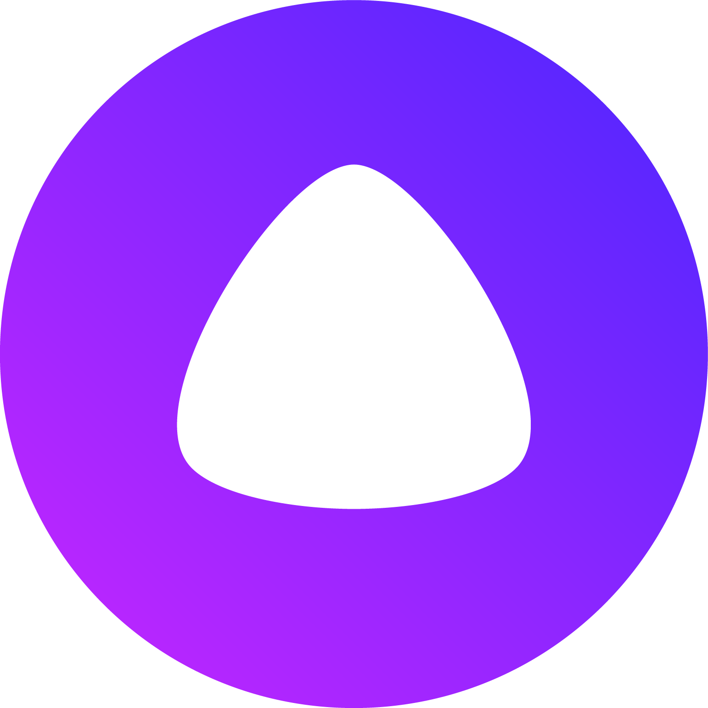

Голосовой помощник «Алиса»

Весной 2017 года тестирование собственного голосового помощника запустил российский «Яндекс». Ассистент по имени Алиса встроен в поисковое приложение компании. Пользователь может решить свою задачу в форме диалога с ассистентом — вместо ввода запроса в поисковую строку. 10 октября 2017 года компания объявила об официальном запуске сервиса — помощник появился в стабильной версии поискового приложения для Android и iOS, а также в бета-версии «Голосового помощника» для Windows.
Возможности «Алисы»
- В основе «Алисы» — нейронные сети, которые распознают речь, интерпретируют её , составляют ответы и синтезируют голос помощника. «Алиса» обучается на огромных массивах текстов, чтобы общаться с пользователем на свободные темы.
- Есть и «редакторские» реплики, написанные командой для ответов на популярные вопросы.
- Одна из главных сложностей в разработке такой системы: понять, что будет интересовать пользователей, и как они будут об этом спрашивать. Кто-то спрашивает у поисковика «где я», кто-то — «какая моя геолокация».
- Основные отличия «Алисы» от конкурентов (к примеру, Siri) — интеграция с собственной поисковой системой компании и наличие нейронной сети, с помощью которой помощник самостоятельно генерирует новые реплики.
Речевые технологии «Яндекса»
Карты «Яндекса»
Другие разработки «Яндекса»